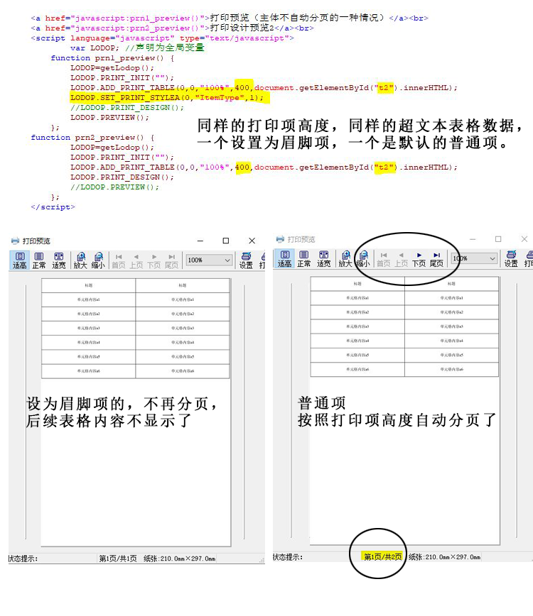

表格打印项设置了眉脚项——表格不按照打印项高度自动分页的情况3
之前两种博文介绍过两种不自动分页的情况：
情况1,：用的ADD_PRINT_TABLE输出，大table套小table，小table想自动分页，但是放到大table的tr行里了，ADD_PRINT_TABLE不切行，因此超过纸张或超过打印项高度都不会自动分页，（LODOP设置超文本不自动分页的方法）
情况2：用的ADD_PRINT_TABLE输出，把table主体放到thead里了，ADD_PRINT_TABLE里thead会每页输出，因此超过纸张或超过打印项高度都不会自动分页，（表体放到了thead里，且用ADD_PRINT_TABLE——表格不按照打印项高度自动分页的情况2）
该文介绍和测试后第三种，第三种如果设置了打印项高度，会按照打印项高度显示当页内容，但是不会分到下一页。
内容就像是被截断了。
造成这种现象的原因是，把需要自动分页的打印项误设置为了页眉页脚项
LODOP.SET_PRINT_STYLEA(0,"ItemType",1);
解决方法：把误设置的眉脚项语句去掉，普通项可以根据打印项高度自动分页。
测试代码：（为简略测试，还是用的之前的测试‘table主体放到thead里’里的表格代码，用的是div2）
同样的打印项高度，同样的超文本表格数据，一个设置为眉脚项，一个是默认的普通项。
。。。。。。之前博文里div2里的的表格代码
<a href="javascript:prn1_preview()">打印预览（主体不自动分页的一种情况）</a><br> <a href="javascript:prn2_preview()">打印设计预览2</a><br> <script language="javascript" type="text/javascript"> var LODOP; //声明为全局变量 function prn1_preview() { LODOP=getLodop(); LODOP.PRINT_INIT(""); LODOP.ADD_PRINT_TABLE(0,0,"100%",400,document.getElementById("t2").innerHTML); LODOP.SET_PRINT_STYLEA(0,"ItemType",1); //LODOP.PRINT_DESIGN(); LODOP.PREVIEW(); }; function prn2_preview() { LODOP=getLodop(); LODOP.PRINT_INIT(""); LODOP.ADD_PRINT_TABLE(0,0,"100%",400,document.getElementById("t2").innerHTML); LODOP.PRINT_DESIGN(); //LODOP.PREVIEW(); }; </script>
图示：
效果：普通项根据打印项高度自动分页了（超过打印项高度的表格内容分到了第二页），设为页眉页脚项的，虽然是截止到分页高度，但不再分页，后面的表格内容丢了。
